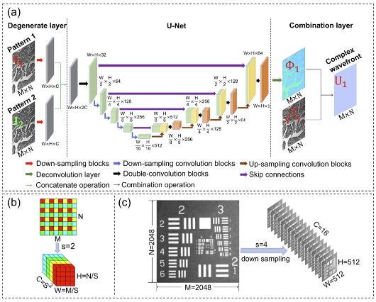
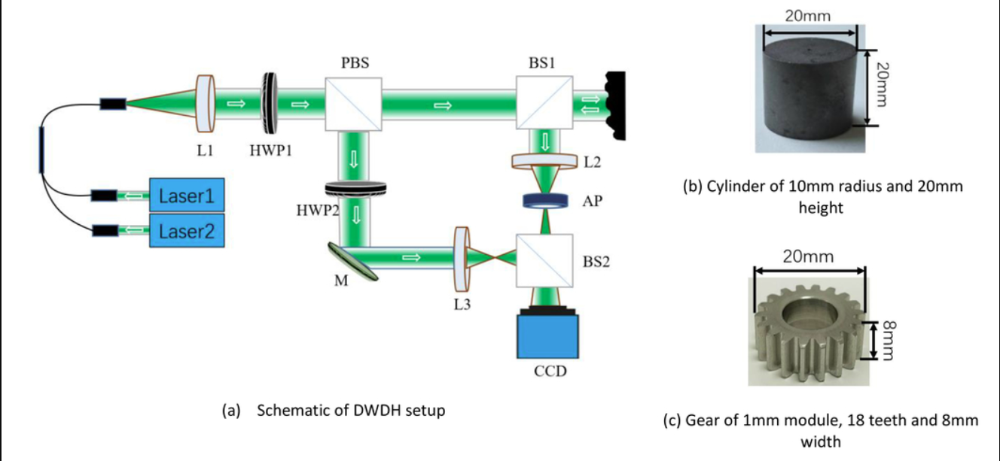

About Me
I am a Ph.D. student in Electrical and Computer Engineering at Purdue University, advised by Professor Stanley Chan in the Intelligent Imaging Lab. I received my B.S. and M.S. degrees from Shanghai Jiao Tong University.
My research interests are in computer vision, geometric perception, and computational imaging. I am especially interested in practical perception problems where physical structure can make learned models more interpretable and reliable. My current doctoral research focuses on monocular metric depth estimation and uncertainty for 3D perception.
I am seeking research and engineering internships for Summer 2027. Please feel free to get in touch.
News
- Apr 2026Pupil Design for Computational Wavefront Estimation is available as a preprint.
- Mar 2026Led Purdue's student team in the DARPA CIDAR Challenge; the team was among five semifinal prize recipients.
- Jan 2026NewtonGen was accepted to ICLR 2026 (co-author).
- Sep 2025A paper I co-authored on personalized face restoration appeared at ICIP 2025.
- Oct 2023My first-author paper on complex wavefront retrieval was published in Optics Letters.
Research
My current doctoral research focuses on monocular metric depth estimation. More broadly, I am interested in reliable 3D visual perception for systems that interact with the physical world.
Publications
-
 Markov-Renewal Single-Photon LiDAR SimulatorEuropean Conference on Computer Vision (ECCV), 2026
Markov-Renewal Single-Photon LiDAR SimulatorEuropean Conference on Computer Vision (ECCV), 2026 -
 NewtonGen: Physics-Consistent and Controllable Text-to-Video Generation via Neural Newtonian DynamicsInternational Conference on Learning Representations (ICLR), 2026
NewtonGen: Physics-Consistent and Controllable Text-to-Video Generation via Neural Newtonian DynamicsInternational Conference on Learning Representations (ICLR), 2026 -
 Pupil Design for Computational Wavefront EstimationarXiv preprint, 2026My contribution: optical setup, data collection, and experimental analysis.
Pupil Design for Computational Wavefront EstimationarXiv preprint, 2026My contribution: optical setup, data collection, and experimental analysis. -
 Generative Personalized Blind Face Restoration Enhanced by Physical IdentityIEEE International Conference on Image Processing (ICIP), 2025
Generative Personalized Blind Face Restoration Enhanced by Physical IdentityIEEE International Conference on Image Processing (ICIP), 2025 -

Imaging process matched neural network for complex wavefront retrieval with a higher space–bandwidth productOptics Letters, 48(20), 5399–5402, 2023 · First author -

3D measurement of rough objects based on dual wavelength digital holographyProceedings of SPIE, 12550, International Conference on Optical and Photonic Engineering (icOPEN 2022), 2023
Education
- Purdue University — Ph.D. in Electrical and Computer Engineering, 2024–present
- Shanghai Jiao Tong University — M.S. in Electronic Information and Electrical Engineering, 2021–2024
- Shanghai Jiao Tong University — B.S. in Electronic Information and Electrical Engineering, 2017–2021